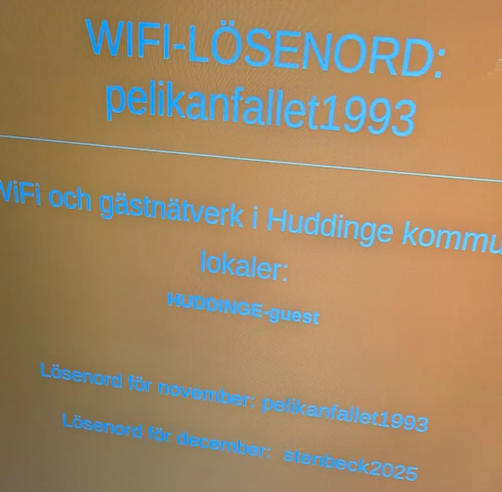

Insändare

Varför byter vi wifi-lösenord så ofta??
Bara varför?? Hade inte ETT säkert lösenord varit bättre än att ha ett nytt, skitigt, lösenord varje jävla månad? Det är inte som att hemlösa utanför skolan försöker sno bredband. Skolan är ju bokstavligen talat en tegelsten, i princip INGEN mobildata kan ta sig in, så jag tror inte något kommer ut heller. Det är ingen utanför skolan som snor wifi:t. Så igen, varför byter vi lösenordet varje månad? Känns som att det bara irriterar elever (btw - shout out till redaktionen för att ni alltid har med lösenordet för månaden längst upp på förstasidan). Kan vi åtminstone bara byta varje termin?